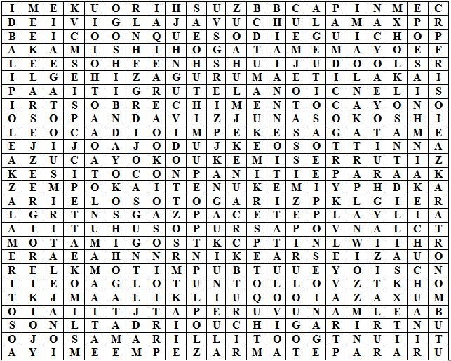

|  | Encuentra las siguientes palabras de Judo que seguro conoces. ¿Sabes lo que significan? 1 USHIRO UKEMI 2 YOKO UKEMI 3 ZEMPO KAITEN UKEMI 4 MAE UKEMI 5 HIZA GURUMA 6 O SOTO GARI 7 O UCHI GARI 8 IPPON SEOI NAGE 9 O GOSHI 10 KESA GATAME 11 YOKO SHIHO GATAME 12 KAMI SHIHO GATAME 13 REI 14 SEIZA |